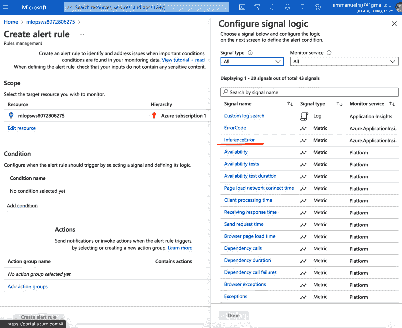
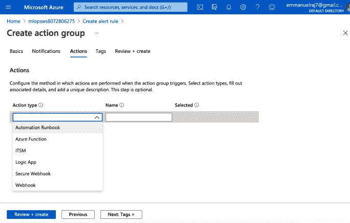
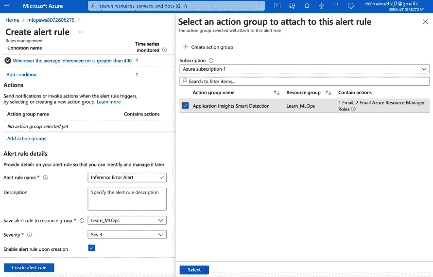
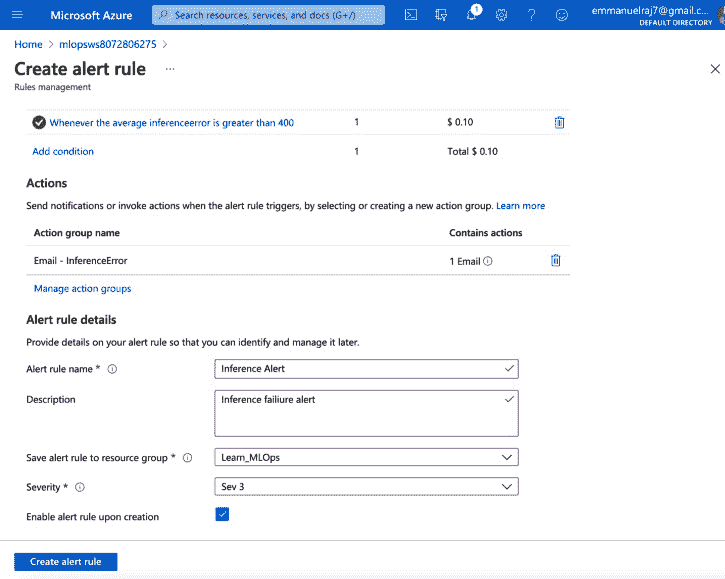

第十三章:管理持续学习的 ML 系统
在本章中，我们将思考在机器学习 ( ML )解决方案中持续学习的需求。适应是机器智能的核心。适应越好，系统越好。持续学习关注外部环境并适应它。实现对 ML 系统的持续学习可以获得巨大的好处。当我们探索持续学习和研究可解释监控框架的治理组件时，我们将看看成功治理 ML 系统需要什么，这有助于我们控制和治理 ML 系统以实现最大价值。
我们将通过启用警报和动作特性来深入研究治理的实际实现。接下来，我们将研究保证模型质量和控制部署的方法，并且我们将学习生成模型审计和报告的最佳实践。最后，我们将了解支持模型再训练和维护 CI/CD 管道的方法。
让我们首先思考持续学习的必要性，然后继续探讨本章中的以下主题:
- 理解持续学习的需要
- 使用可解释的监控来管理 ML 系统
- 启用模型再训练
- 维护 CI/CD 渠道
理解持续学习的需要
当我们在 第 1 章 、m lops 工作流程基础中开始时，我们了解了组织中 AI 采用受阻的原因。原因之一是在 ML 系统中缺乏持续学习。是的，不断学习！我们将在本章中解决这一挑战，并确保我们在本章结束时了解如何启用这一功能。现在，让我们看看持续学习。
持续学习
持续学习建立在从数据、人类专家和外部环境中持续学习的原则之上。持续学习使终身学习成为可能，适应是其核心。它使 ML 系统随着时间的推移变得智能，以适应手边的任务。它通过监控和学习环境以及协助 ML 系统的人类专家来做到这一点。持续学习可以成为 ML 系统的一个强大的附件。随着时间的推移，它可以让你实现人工智能系统的最大潜力。强烈建议继续学习。让我们来看一个例子:

图 13.1-贷款发放场景-传统系统与人工辅助的 ML 系统
与在一个完全依赖于人类雇员的组织中拥有一个传统的过程相比，部署一个模型(通过持续学习来实现)有几个优点。例如，在上图中，我们可以在两种情况下看到银行贷款审批流程的步骤。第一个场景仅由人类专家驱动(例如在传统的银行设置中)。第二个场景是使用 ML 系统来筛选申请、协商、提供贷款申请最终确定(其中人类专家审查 ML 系统的决策并批准或拒绝它)以及批准贷款，从而自动化或增强流程。传统设置的处理时间为 1 周，而 ML 系统(与人类专家一起工作)的处理时间为 6 小时。
ML 系统对银行来说更快更可持续，因为它在人工助手的帮助下不断学习和改进。人类雇员在公司或工作中有固定的雇佣期限。当他们离开时，他们的领域专业知识就消失了，培训一名新员工或让一名新员工入职完成同样的任务成本高昂。另一方面，ML 模型与人类专家一起工作或由人类专家协助，随着时间的推移不断学习，设法随时间学习并无限期地保留该知识(关于时间)。与员工不断变化的传统方法相比，通过 ML 系统(以及人类专家)获得的持续学习可以被银行永久保留。从长远来看，持续学习可以为 ML 系统和企业释放巨大的价值。
持续学习的需要
下面的图表显示了为什么需要持续学习的一些原因，以及它将如何增强您的 ML 系统以最大化您的商业价值:

图 13.2-持续学习的好处
- 适应:在大多数简单的应用中，当数据不断进入时，数据漂移可能保持不变。然而，许多应用程序已经动态地改变了数据漂移，例如推荐或异常检测系统，其中数据保持流动。在这种情况下，不断学习对于适应和准确预测非常重要。因此，适应不断变化的数据和环境非常重要。
- 可扩展性:IDC 发布的白皮书(https://www . Seagate . com/files/www-content/our-story/trends/files/IDC-Seagate-data age-white paper . pdf)提出，到 2025 年，数据生成速率将增长到 160 ZB/年，我们将无法存储所有数据。这篇论文预测我们只能储存 3%到 12%的二氧化碳。数据需要即时处理；否则，它将会丢失，因为存储基础架构跟不上产生的数据。这里的主要技巧是处理一次传入的数据，只存储必要的信息，然后去掉其余的。
- 相关性:来自 ML 系统的预测需要具有相关性，并且需要适应不断变化的环境。需要不断学习，以保持 ML 系统与不断变化的上下文和环境高度相关并具有价值。
- 性能:持续学习将使 ML 系统实现高性能，因为它通过适应变化的数据和环境来使 ML 系统具有相关性。换句话说，通过提供更有意义或更有价值的预测，更相关将提高 ML 系统的性能，例如在准确性或其他度量方面。
由于这些原因，ML 系统需要持续的学习，所以没有持续的学习，我们就不能达到 ML 系统所能提供的最大价值。换句话说，项目注定要失败。持续学习是人工智能项目成功的关键。作为可解释的监控的一部分，有效的治理策略可以实现持续的学习。持续学习的一个重要部分是模型再训练，这样我们就可以应对不断发展的数据并做出相关决策。要做到这一点，我们可以融合可解释的监控和模型再训练，以实现持续学习:
可解释的监控+模型再训练=持续学习
展望未来，我们将看到不断深入的学习。现在，让我们来探索如何给 ML 系统带来有效的治理。
可解释的监控-治理
在本节中，我们将针对我们一直在处理的业务用例实施我们之前在 第 11 章 、监控您的 ML 系统的关键原则中了解到的治理机制。我们将深入研究管理 ML 系统的三个组成部分，如下图所示:

图 13.3–管理您的 ML 系统的组成部分
ML 系统的有效性来自于它们如何被管理以最大化商业价值。为了具有端到端的可跟踪性并遵守法规，系统治理需要质量保证和监控、模型审计和报告。我们可以通过监控和分析模型输出来管理和控制 ML 系统。智能警告和行为指导治理，以优化业务价值。让我们看看 ML 系统的治理是如何通过警告和行为、模型质量保证和控制、模型审计和报告来编排的。
警报和操作
通过执行预定检查来检测状况，从而生成警报。满足条件时，会生成警报。根据生成的警报，我们可以执行操作。在这一节中，我们将了解这些元素，以及它们是如何被编排来管理一个 ML 系统的。
什么是警报？
警报是在后台运行的预定任务，用于监控应用程序，检查是否检测到特定条件。警报由三个因素驱动:
- 日程安排:我们应该多久检查一次病情？
- 条件:需要检测什么？
- 动作:当检测到一个条件时，我们应该做什么？
我们可以根据应用程序性能创建警报，以监控以下方面:
- 基于阈值的可用性警报
- 基于阈值的失败请求警报
- 基于阈值的服务器响应时间警报
- 基于阈值的服务器异常警报
- 基于数据漂移阈值的警报
- 基于模型漂移阈值的警报
- 基于错误或异常的警报
管理 ML 系统的一个重要领域是处理错误，所以让我们把注意力转向错误处理。
处理错误
在应用程序中，潜在的错误总是可能的。我们可以通过解决 ML 应用程序的所有可能的边缘情况来预见它们。使用下图所示的框架，我们可以解决这些错误。该框架的目的是识别边缘情况和自动化调试方法，以处理可能的错误。这将保持 ML 服务正常运行:
图 13.4–调试和调查错误的框架
如上图所示，我们首先确定可能出现错误的资源，并选择一个资源来解决该错误。在选择资源时，我们通过检查资源的高利用率和资源饱和(当资源的容量被完全利用或其容量超过设定的阈值时，资源饱和)来检查错误。在任一问题的情况下，我们通过调查日志和设计处理任何错误的解决方案来调查发现。最后，我们通过使用预制脚本来处理任何问题(阻止系统以最佳方式运行)，例如，通过重新启动资源或重新加载函数或文件来使资源启动并运行在健康状态，从而实现自动化调试。
通过解决所有可能的边缘情况，并设计自动化的错误处理或调试，我们可以使我们的应用程序防失败，以服务于我们的用户。拥有一个防失败的应用程序可以实现健壮性，确保用户从使用 ML 应用程序中获得无缝的体验和价值。一旦发现错误，通过调查或创建自动调试过程来解决错误。毕竟，预防胜于治疗。因此，检查所有可能的边缘情况并预先解决它们是有益的。
我们可以通过使用异常处理功能来处理潜在的错误。异常处理是一种编程技术，用于处理需要特别注意的罕见情况。在 Python 中很容易实现各种错误类型的异常处理。我们可以使用try、except、else和finally功能来处理错误和异常，如下图所示:

图 13.5–处理异常和边缘情况
在try子句中遇到异常之前，所有的语句都会被执行。在try子句中发现的异常被except块捕获并处理。else块允许您编写只有在try子句中没有异常时才能运行的部分。使用finally，不管有没有任何以前经历过的异常，您都可以运行应该一直运行的部分代码。
下面列出了一些可能的常见异常或错误:

这些边缘情况或错误是常见的，可以通过使用try和exception技术在应用中解决。策略是减轻 ML 系统对用户来说看起来非常基础或幼稚的情况；例如，在聊天中发送错误消息的聊天机器人。在这种情况下，错误的成本很高，用户将失去对 ML 系统的信任。
我们将为已经实现的业务用例实现一些定制的异常和错误处理，并基于生成的警报实现操作。让我们开始吧:
- In your Azure DevOps project, go to our
13_Govenance_Continual_Learning. From there, access thescore.pyfile. We will begin by importing the required libraries. This time, we will use theapplicationinsightslibrary to track custom events or exceptions of Application Insights that are connected to the endpoint:import json import numpy as np import os import pickle import joblib import onnxruntime import logging import time from azureml.core.model import Model from applicationinsights import TelemetryClient from azureml.monitoring import ModelDataCollector from inference_schema.schema_decorators import input_schema, output_schema from inference_schema.parameter_types.numpy_parameter_type import NumpyParameterType
如前面的代码所示，我们已经从
applicationinsights库中导入了TelemetryClient函数。我们将使用TelemetryClient函数来访问连接到我们端点的应用洞察。从应用洞察向TelemetryClient功能提供您的工具密钥。 - This Instrumentation Key can be accessed from your Application Insights, which should be connected to the ML application, as shown in the following screenshot:

图 13.6–从应用洞察中获取工具密钥
- 在获取你的
TelemetryClient函数后，如下面的代码所示。这里，我们在tc变量中创建一个TelemetryClient对象，用于跟踪定制事件:def init(): global model, scaler, input_name, label_name, inputs_dc, prediction_dc, tc
initfunction to monitor whether aFileNotFounderror occurs when we load thescalerandmodelartifacts. If a file is not found, thetc.track_events()function will log the error message that's generated by the exception and tag the custom code101. - 同样，我们将在
run函数:@input_schema('data', NumpyParameterType(np.array([[34.927778, 0.24, 7.3899, 83, 16.1000, 1016.51, 1]]))) @output_schema(NumpyParameterType(np.array([0]))) def run(data): try: inputs_dc.collect(data) except Exception as e:中实现一些其他自定义事件，即tryandexceptto collect incoming data using the model data collector function. This collects the incoming data and stores it in theblobstorage connected to the Azure ML service. If the incoming data contains some anomalous data or a missing value, an exception is raised. We will raise aValueNotFounderror using thetrack_eventfunction so that we can log the exception message and custom code (in this case, a random or custom number of 201 is given to track the error). After collecting the incoming data, we will attempt to scale the data before inference:try: # scale incoming data data = scaler.transform(data) except Exception as e:
tryandexceptcan be handy in this case, since we are trying to scale the data using ascalerfile that's been loaded in theinitfunction.If scaling the data is not successful, then an exception is raised. Here, we use the
track_eventfunction to track the exception on Application Insights. We generate a custom event namedScalingErrorin case an exception is generated. An exception message and an error code of301is logged on Application Insights. Likewise, the most important step of dealing with the scoring file – inferencing the model – needs to be done meticulously.Now, we will use
tryandexceptagain to make sure the inference is successful without any exceptions. Let's see how we can handle exceptions in this case. Note that we are accessing element number2for themodel.runfunction. This causes an error in the model's inference as we are referring to an incorrect or nonexistent element of the list:try: # model inference result = model.run([label_name], {input_name: data.astype(np.float32)})[2] # this call is saving model output data into Azure Blob prediction_dc.collect(result) if result == 0: output = "Rain" else: output = "No Rain" return output except Exception as e:track_event()function to generate a custom event calledInferenceError. This will be logged on Application Insights with an error message and a custom error code of401. This way, we can log custom errors and exceptions on Application Insights and generate actions based on these errors and exceptions.ValueNotFound、OutofBoundsException和InferenceError
现在，让我们看看如何使用错误日志在 Application Insights 中调查这些错误，并为其生成操作。
设置操作
我们可以根据之前创建的异常事件(在处理错误部分)设置警报和操作。在本节中，我们将根据我们生成的警报，以电子邮件通知的形式设置一个操作。每当 Application Insights 中生成异常或警报时，我们都会收到电子邮件通知。然后，我们可以调查并解决它。
让我们通过连接到您的 ML 系统端点的 Application Insights 来设置收到警报时的操作(电子邮件)。您可以通过 Azure ML 工作区访问应用洞察。让我们开始吧:
- Go to
Endpointsand check for Application Insights. Once you've accessed the Application Insights dashboard, click onTransaction search, as shown in the following screenshot, to check for your custom event logs (for example, inference exception):
图 13.7–检查自定义事件日志
- You can check for custom events that have been generated upon exceptions and errors occurs via the logs, and then set up alerts and actions for these custom events. To set up an alert and action, go to the Monitoring > Alerts section and click on New alert rule, as shown in the following screenshot:

图 13.8–设置新的警报规则
- Here, you can create conditions for actions based on alerting. To set up a condition, click on Add condition. You will be presented with a list of signals or log events you can use to make conditions. Select InferenceError, as shown in the following screenshot: 
图 13.9–配置条件
- After selecting the signal or event of your choice, you will get to configure its condition logic, as shown in the following screenshot. Configure the condition by setting up a threshold for it. In this case, we will provide a threshold of
400as the error raises a value of401(since we had provided a custom value of401for theInferenceErrorevent). When an inference exception occurs, it raises anInferenceErrorwith a value above400(401, to be precise):
图 13.10–配置条件逻辑和阈值
- After setting up the threshold, you will be asked to configure other actions, such as running an Automation Runbook, Azure Function, Logic App, or Secure Webhook, as shown in the following screenshot. For now, we will not prompt these actions, but it is good to know that we have them since we can run some scripts or applications as a backup mechanism to automate error debugging:
图 13.11–自动化调试的动作(可选)
- Finally, we will create a condition. Click Review and create to create the condition, as shown in the preceding screenshot. Once you have created this condition, you will see it in the Create alert rule panel, as shown in the following screenshot. Next, set up an action by clicking on Add action groups and then Create action group:
图 13.12–创建行动组
- Provide an email address so that you can receive notifications, as shown in the following screenshot. Here, you can name your notification (in the Alert rule name field) and provide the necessary information to set up an email alert action:

图 13.13–配置电子邮件通知
在提供所有必要的信息(包括电子邮件)后，点击审查+创建按钮来配置行动(基于错误的电子邮件)。最后，提供预警规则的详细信息，如预警规则名称、描述和严重性，如下图所示:
图 13.14–配置电子邮件通知
- 点击
InferenceError。至此，您已经创建了一个警报，现在是测试它的时候了。转到13_Govenance_Continual_Learning文件夹并访问test_inference.py脚本(用您的端点链接替换 URL)。然后，通过运行以下命令运行脚本:python3 test_inference.py
- 运行脚本将会输出一个错误。执行一些推理后停止脚本。在错误发生后的 5-10 分钟内，您会收到电子邮件通知，如下图所示:

图 13.15-生产错误的电子邮件通知
祝贺您–您已经成功设置了一个针对错误的电子邮件操作提醒！这样，您可以在发现错误时进行调查，以便解决它并让系统启动和运行。
接下来，让我们看看如何确保我们对模型有质量保证，并且能够控制它们，以便最大化商业价值。
模型质量保证和控制
不断发展或动态变化的数据会导致预测错误率增加。这可能是由于业务和外部环境变化导致的数据漂移，也可能是由于数据中毒攻击。预测错误率的这种增加导致当 ML 模型被重新训练(手动或自动)时，必须重新评估 ML 模型，从而导致比以前的算法更精确的新算法的发现。以下是用新数据测试 ML 模型的一些指南:
- 通过重新训练您的模型并评估它们的性能来实现持续学习。
- 定期评估新数据集上所有模型的性能。
- 当替代模型开始提供比现有模型更好的性能或更高的准确性时，发出警报。
- 维护包含最新性能细节和报告的模型注册表。
- 维护所有模型的端到端谱系，以重现它们或向利益相关者解释它们的性能。
模型审计和报告
为 MLOps 建立定期审计和报告系统是一种健康的做法，因为它使组织能够端到端地跟踪其运营，遵守法律，并使他们能够应要求向利益相关方解释其运营。我们可以确保 ML 系统符合已经在社会和政府层面建立和审议的惯例。要审计和报告 MLOps，建议审计员检查审计的基础，如下图所示:

图 13.16–洗钱活动审计报告的基础
数据审计
数据是 ML 系统做出许多决策的驱动力。由于这个原因，审计员需要考虑用于审计和报告的数据、检查训练数据、测试数据、推断数据和监控数据。这是非常重要的，并且具有端到端的可追溯性来跟踪数据的使用(例如，哪个数据集用于训练哪个模型)是 MLOps 所需要的。拥有一个 Git for Data 类型的机制来版本化数据可以使审计员引用、检查和记录数据。
模型审计(公平性和绩效)
ML 系统的审计人员需要有一个黑客的思维模式来识别一个模型可能失败的不同方式，并且不能给出公平的预测。首先，使用可解释的人工智能技术检查训练数据并与推断数据进行比较。这可以帮助审计人员在个人层面上对每个模型及其每个预测做出公正的判断。为了对每个模型进行公平性和性能评估，我们可以使用数据切片技术，它可以揭示有价值的信息以进行评估。因此，对于审计人员来说，请求所需人口统计数据和数据切片的数据切片结果是很有价值的。为了进行集体评估，我们可以比较模型并评估它们的性能。这可以揭示进行公平性和绩效评估的另一个角度的信息。
如果要进行模型审核，它将评估模型的输入(训练数据)、模型本身及其输出。需要评估数据的一致性和训练数据中可能存在的偏差。例如，如果一个简历筛选模型已经根据以前或历史决策进行了培训，在这些决策中，候选人收到了工作邀请，员工得到了晋升，我们会希望确保培训数据没有受到过去招聘人员和经理的隐性偏见的影响。对竞争模型进行基准测试，执行统计测试以确保模型从训练推广到未知结果，以及使用最先进的技术来实现模型的可解释性，这些都是模型评估过程的一部分。
项目和治理审计
有必要深入了解 AI 模型来审核算法吗？当然不是。对一个人工智能系统进展的审计就像一个项目管理审计。期望的成就是否有明确的目标？如果一个政府实体在一个特定的环境中实施了人工智能，这是一个很好且直接的问题。此外，如果外部开发人员已经应用于 AI 系统，那么在开发人员离开后，是否有可行的框架来管理模型？为了减少对专业知识的需求，公司必须有大量的概念创建文档和熟悉模型的员工。因此，从长远来看，审计开发和治理实践是有益的。
审计数据考虑、模型公平性和性能以及 ML 系统的项目管理和治理可以提供 MLOps 的全面视图。使用错误警报和操作，我们可以对错误进行及时的调查，以使系统启动并运行，在某些情况下，我们甚至可以进行自动化调试，以自动化错误解决和 MLOps。最后，通过进行模型质量保证、控制和审计，我们可以确保我们的 MLOps 的有效治理。接下来，我们将看看如何启用模型再训练，以便我们拥有 ML 系统的持续学习能力。
启用模特再培训
到目前为止，我们已经讨论了什么是模型漂移以及如何识别它。所以，问题是，我们应该做些什么？如果模型的预测性能由于环境的变化而下降，解决方案是使用代表当前情况的新训练集来重新训练模型。你的模型应该重新训练多少？你如何选择新的锻炼计划？下图显示了根据监视器模块的结果触发构建模块的模型再训练功能。有两种方式触发模型再训练功能。一种是手动的，另一种是通过自动化模型再训练功能。让我们来看看如何实现这两者:
图 13.17–在 MLOps 工作流程中启用的模型再培训
手动模型再训练
产品负责人或质量保证经理有责任确保手动模型再培训成功。手动模型触发步骤包括评估模型漂移，如果它超过阈值(您需要确定将触发模型再训练的漂移阈值)，则他们必须通过使用新数据集(这可以是先前的训练数据集和最新的推断数据)训练模型来触发模型训练过程。这样，产品所有者或质量保证经理可以完全控制整个过程，并且知道何时以及如何触发模型再培训，以从 ML 系统中交付最大化的价值。
自动化模型再训练
如果您想完全自动化 MLOps 流水线，自动化模型漂移管理可能是重新训练生产模型的理想方法。自动化模型漂移管理是通过配置监控应用程序诊断和模型性能的批处理作业来完成的。然后，您必须激活模型再训练。自动化模型漂移管理的一个关键部分是设置将自动触发再训练模型功能的阈值。如果漂移监控阈值设置得太低，您将面临过于频繁地重新训练的风险，这将导致高昂的计算成本。如果阈值设置得太高，您就有重新培训不够频繁的风险，从而导致次优的生产模型。计算出正确的阈值比看起来更棘手，因为你必须计算出你需要多少额外的训练数据来反映这个新的现实。即使环境发生了变化，用一个训练集很小的模型替换现有的模型也是没有意义的。一旦你弄清楚了阈值，你就可以有工作(例如，作为 CI/CD 管道的一部分)定期比较实时数据集和训练数据的特征分布(正如我们在 第 12 章 、模型服务和监控中所做的)。当检测到较大偏差时(或高于定义的阈值)，系统可以安排模型重新训练并自动部署新模型。这可以使用诸如 Jenkins 或 Kubernetes 作业或 CI/CD pipeline cron 作业之类的工作调度程序来完成。这样，您可以完全自动化 MLOps 管道和模型再训练部分。
请注意，在新数据很少的情况下，或者如果您很少进行批量推断(例如，每 6 个月一次)，重新训练模型是没有意义的。您可以在推理之前训练模型，也可以根据需要定期训练模型。
维护 CI/CD 管道
您可能还记得，在 第十章 【生产发布要点】中，我们提到过一个型号不是产品；管道就是产品。因此，在建立自动或半自动 CI/CD 管道后，监控我们管道的性能至关重要。我们可以通过检查 Azure DevOps 中的发布来做到这一点，如下面的截图所示:
图 13.18–维护 CI/CD 管道发布
检查的目标是保持 CI/CD 管道处于健康和稳定的状态。以下是一些保持 CI/CD pip eline 健康可靠的指南:
- 如果一个构建被破坏，团队的尽快修复策略应该被执行。
- 集成自动化验收测试。
- 需要拉取请求。
- 同行代码审查每个故事或功能。
- 定期审核系统日志和事件(推荐)。
- 定期向所有团队成员可视地报告指标(例如，slackbot 或电子邮件通知)。
通过实施这些实践，我们可以避免高失败率，并使 CI/CD 管道对所有团队成员都是健壮的、可伸缩的和透明的。
总结
在本章中，我们学习了 ML 解决方案中持续学习的关键原则。我们学习了可解释的监控(治理组件),通过实现实际的错误处理和配置动作，使用电子邮件通知来提醒 ML 系统的开发人员。最后，我们研究了支持模型再训练的方法，以及如何维护 CI/CD 管道。至此，您已经具备了为您的用例自动化和管理 MLOps 的关键技能。
祝贺你完成这本书！MLOps 的世界在不断向好的方向发展。现在，您可以使用 MLOps 帮助您的企业蓬勃发展。我希望您喜欢阅读和通过动手完成 MLOps 实施来学习。走出去，做你想看到的改变。祝你的 MLOps 努力一切顺利！